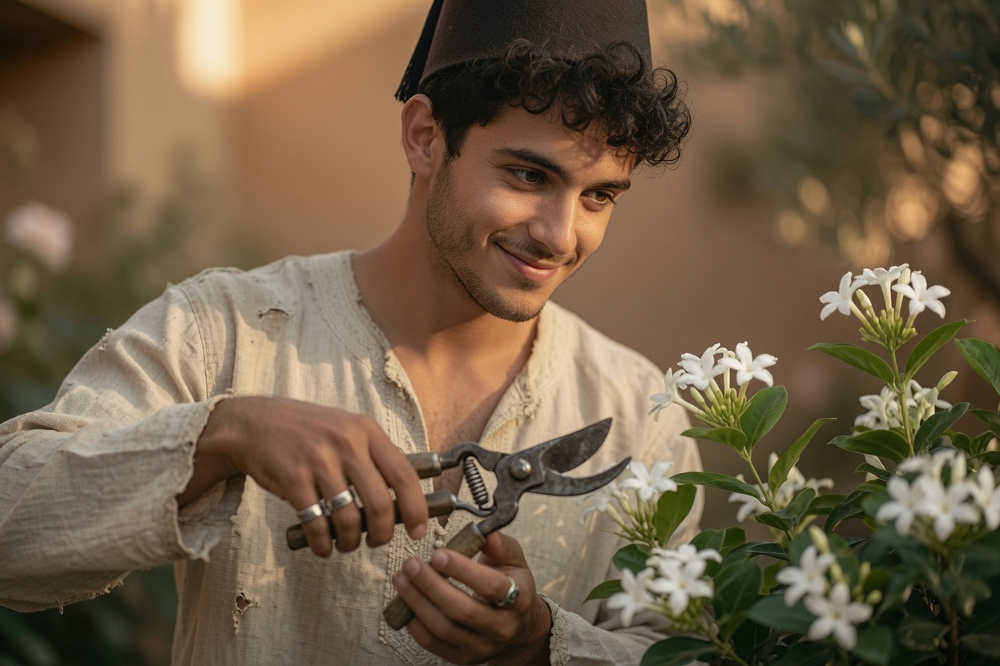
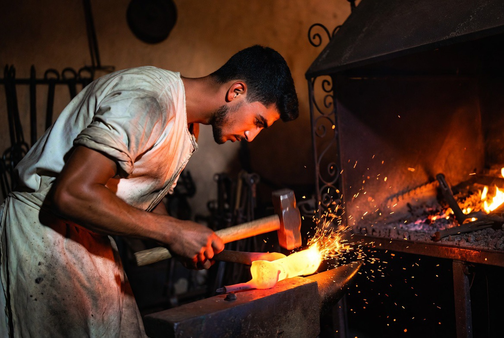
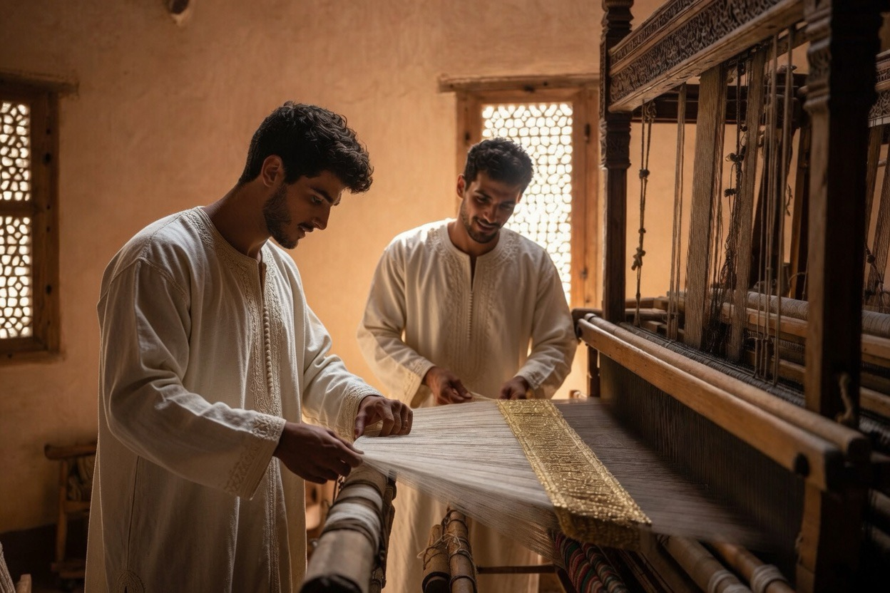
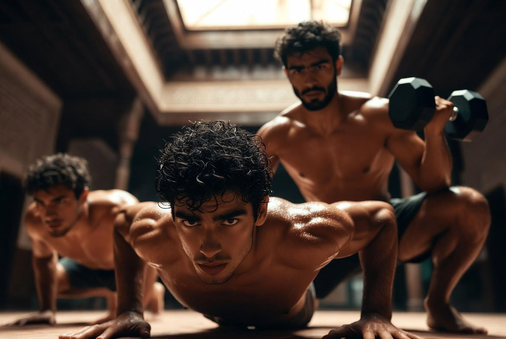
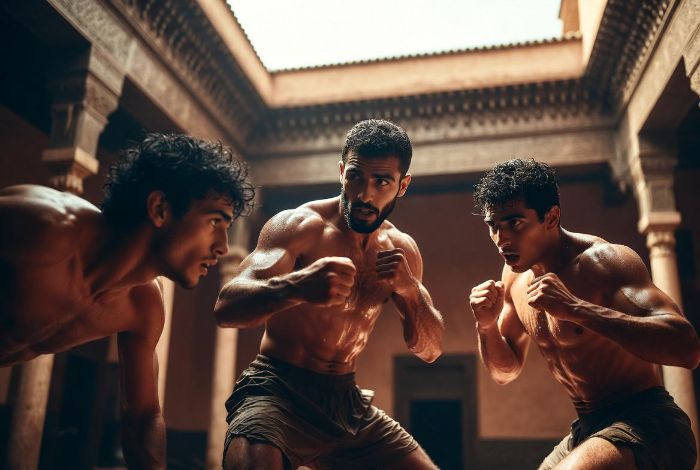
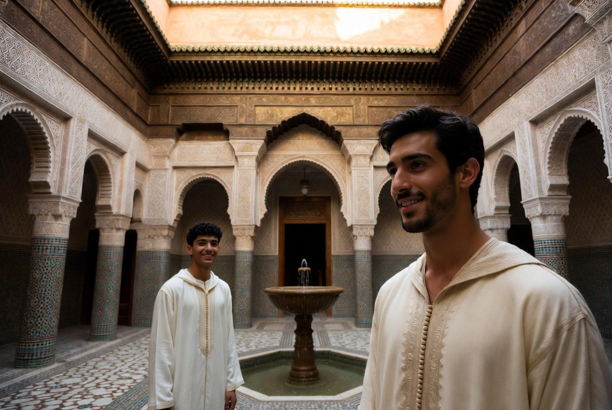

Dar al-Hiraf
La maison des métiers. Formation des jeunes par le geste, l’étude et la discipline du corps.

Dar al-Hiraf n’est pas un atelier touristique. C’est une école de résidence : les jeunes y vivent, travaillent, prient et se forment ensemble.
تعلّم فليسَ المرءُ يولدُ عالماً
وليسَ أخو علمٍ كمن هو جاهلُ
« Apprends : l’homme ne naît pas savant ;
celui qui sait n’est pas comme celui qui ignore. »
al-Shāfiʿī — VIIIe–IXe siècle
Les disciplines
اليدُ إذا عملتْ أحسنتْ، والعلمُ إذا جُرِّبَ ثبتَ
« La main, quand elle œuvre, embellit ; le savoir, quand il est éprouvé, s’affermit. »
Adage de formation artisanale

Calligraphie
Le qalam, la page, le souffle. Écriture comme discipline intérieure.
الخطُّ هندسةٌ روحانيةٌ ظهرتْ بآلةٍ جسمانيةٍ
« La calligraphie est une géométrie de l’esprit
apparue par un instrument du corps. »
Ibn Muqla — Xe siècle

Musique & chant
Oud, ney, voix. Rythme et mémoire.
والعودُ إذا مسّتهُ الأصابعُ أطرَبَ
« L’oud, dès que les doigts le touchent, enchante. »
Tradition musicale arabe

Zellige
Géométrie, coupe, pose. La main au service de l’ordre.

Plâtre & mocárabe
Stuc sculpté, relief, lumière.

Tissage & brocart
Soie, fil d’or, métier à tirage. Le geste lent du brocart de Fès.
نسجوا من الذهبِ الورودَ على الحريرِ
« Ils ont tissé d’or des roses sur la soie. »
Image du brocart de Fès

Parfums & essences
Rose, fleur d’oranger, jasmin, attar. Le nez, la main, la mémoire du jardin.
والطيبُ ذكرى الجنانِ في الأنفِ
« Le parfum est mémoire des jardins dans le souffle. »
Image classique du ṭīb

Bois & intaille
Sculpture, assemblage, patience du bois.
والخشبُ يلينُ تحتَ يدٍ صابرةٍ
« Le bois s’assouplit sous une main patiente. »
Tradition du métier

Fer forgé
Feu, force, précision.
بالنارِ يلينُ الحديدُ وبالصبرِ يُشكَّلُ
« Par le feu le fer s’adoucit ; par la patience il prend forme. »
Adage du forgeron
Le tissage traditionnel

À Fès, le brocart — bahja, khrib — est un savoir-faire qui remonte au moins au XIIIe siècle. Sur le métier à tirage, soie et fil d’or composent des motifs de roses et d’arabesques. Un mètre de tissu peut demander une journée entière de travail.
Ce n’est pas un ornement : c’est une discipline du corps et de l’attention. La tension de la chaîne, le passage de la navette, la lecture du dessin — chaque geste forme la main et le regard. Aujourd’hui presque disparu ailleurs en Afrique du Nord, ce métier trouve ici un lieu où se transmettre encore.
La même tradition a traversé la Méditerranée. En Sicile, c’est grâce aux Arabes que l’art de la soie et du ṭirāz s’est implanté à Palerme ; sous les Normands, les Nobiles Officinae du Palais Royal ont conservé et enrichi ce savoir-faire, en y associant des maîtres byzantins. Arabo-normand-byzantin : une seule ligne de geste, de Fès à Palerme.
Au Riad, le tissage s’inscrit dans la même logique que les autres arts : formation par le geste, patience, beauté utile. Les jeunes apprennent à préparer la chaîne, à lire le motif, à respecter le rythme du métier — et, avec lui, le rythme de la maison.
Parfums & essences
L’art marocain des senteurs — rose de Kelaât, fleur d’oranger, jasmin, attar — devient discipline de formation. Le nez, la main, la mémoire.
Au Maroc, le parfum n’est pas un accessoire. C’est un savoir de jardin, d’hammam et de cérémonie. Distiller l’eau de rose, composer un attar, reconnaître une essence : autant de gestes qui forment le corps et l’attention.
Au Dar al-Hiraf, cette discipline relie le riyāḍ à l’atelier, le pétale à la peau.

Le nez
Apprendre à distinguer, mémoriser, doser. L’attention pure portée à l’odeur.

Le geste
Distillation, macération, assemblage. Cuivre, verre, pierre. Patience de la main.

Les matières
Rose de Kelaât M’Gouna, fleur d’oranger, jasmin, ambre, bakhour. Le jardin devient essence.
Le corps formé
Force, endurance, lutte. Le corps n’est pas un ornement : il est instrument de présence et de discipline.
ومن لم يذقْ مرَّ التعلّمِ ساعةً
تجرّعَ ذلَّ الجهلِ طولَ حياتهِ
« Qui n’a pas goûté l’amertume d’apprendre une heure
boira l’humiliation de l’ignorance toute sa vie. »
al-Shāfiʿī — VIIIe–IXe siècle

Discipline physique
Entraînement harmonieux, force contrôlée, endurance.
أقوى القوّةِ غلبُ النفسِ
« La plus grande force est de se vaincre soi-même. »
Adage de discipline intérieure

Lutte & force
Corps à corps, respect, mesure. Tradition du combat formateur.
القوّةُ بلا أدبٍ كسيفٍ بلا مقبضٍ
« La force sans retenue est un sabre sans poignée. »
Adage du combat formateur

La résidence
Les jeunes vivent sous la même toiture. Ordre, service, présence.
Travail, prière, repas, silence : une journée d’ordre.